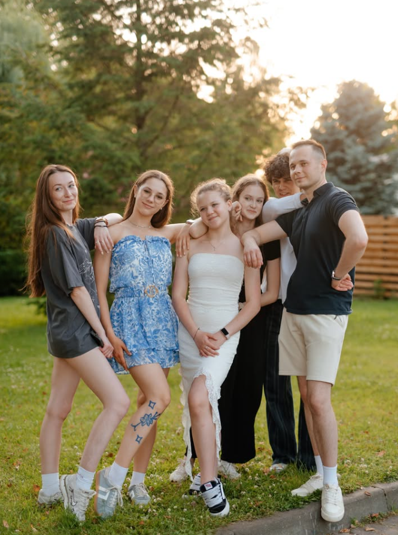
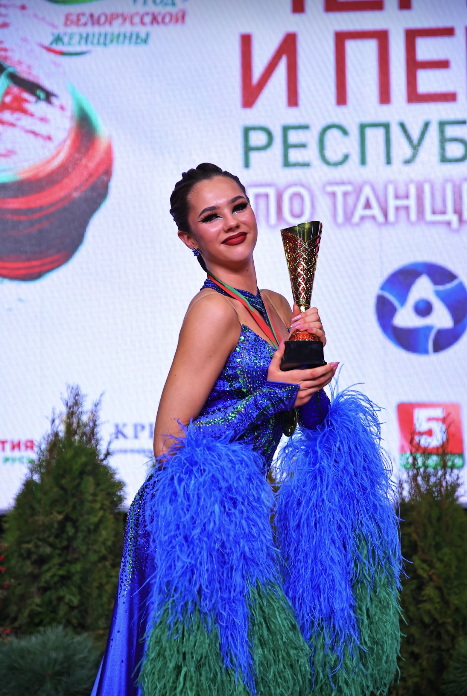
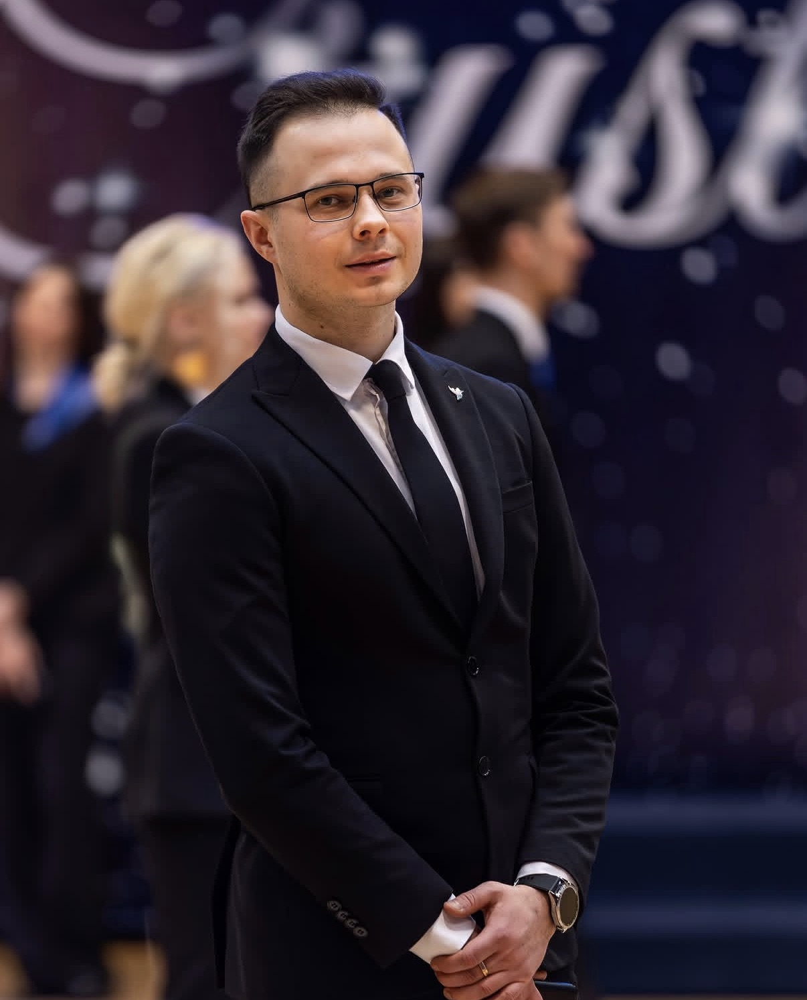
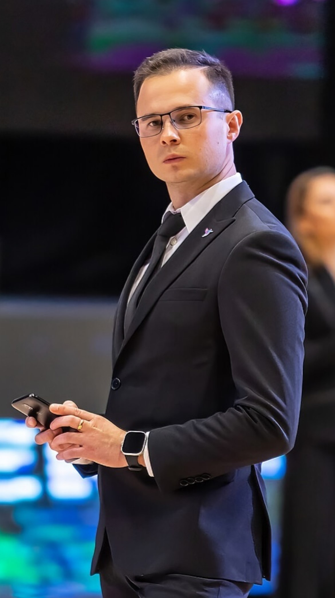
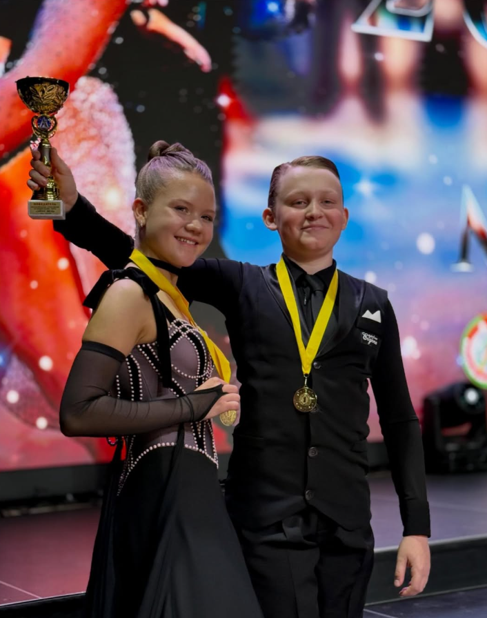
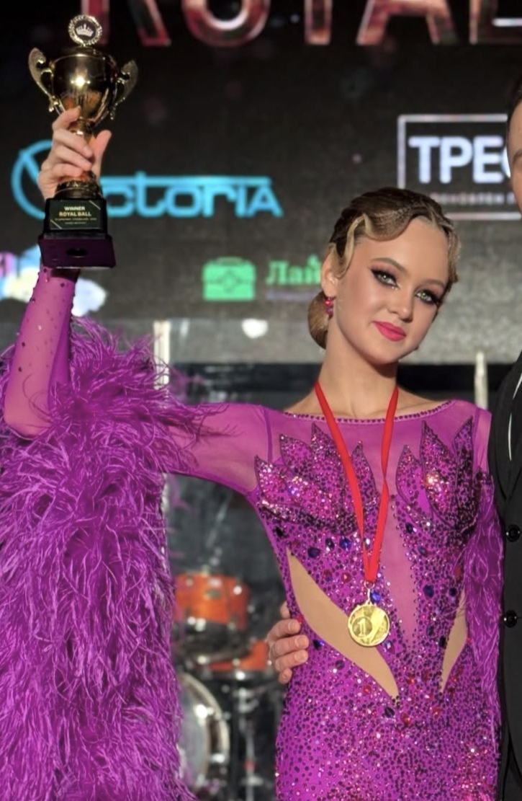

МÁКСИМА
НА МАКСИМУМ
09
Anniversary / in motion
ЛЕТ
01.09.2017
—
01.09.2026
9 лет
Время измеряется не только датами. Оно складывается из тренировок, выходов на паркет, характеров и общих побед.
01 / club
О КЛУБЕ
ТСК «Мáксима» — это место, где любовь к движению перерастает в высокие спортивные результаты.
Мы специализируемся на спортивных бальных танцах: Европейская программа. Латиноамериканская программа.
ХАРАКТЕР
ДИСЦИПЛИНА
РЕЗУЛЬТАТ
ДИСЦИПЛИНА
РЕЗУЛЬТАТ

02 / archiveЦИФРЫ
ЦИФРЫ
ДВИЖЕНИЯ
Не случайность. Девять лет ежедневной работы.
0тренировочных часов
0выхода на паркет
0финала
0медалей
0золотые
0серебряные
0бронзовые
0турниров
0месяцев тренировок
0районных и городских мероприятий
0республиканских соревнований
0международных соревнований
0областное соревнование
0этапа Первенства Республики Беларусь


03 / coachМАКСИМ
МАКСИМ
ЮШКЕВИЧ
Основатель и главный тренер ТСК «Мáксима»
- Мастер спорта Республики Беларусь по танцевальному спорту.
- Педагог первой квалификационной категории.
- Двукратный победитель Чемпионата Республики Беларусь — 2016, 2017.
- VI место на Чемпионате мира 2016 года.

Best couple / 2025—2026ЛУЧШАЯ ПАРА
ЛУЧШАЯ ПАРА
СЕЗОНА
Глеб Дубовик
×
Анастасия Пацкова
Победители: Юниоры 1+2 Е St, Юниоры 2 Е St. Золотой кубок: Юниоры 1 Е4.
Первый кубок клуба принесла Анастасия Пацкова.

Солист года / 2025—2026АЛЕКСАНДРА
АЛЕКСАНДРА
МОЗОЛЬ
Кубок — Соло Юниоры 2 Е St
Золото — Соло Юниоры 1 Е St
Финал — Соло Юниоры 2 D St
Next eventBDA OPEN
BDA OPEN
FESTIVAL
3–4 октября
Физическая форма
Психологическое развитие
Социальные навыки